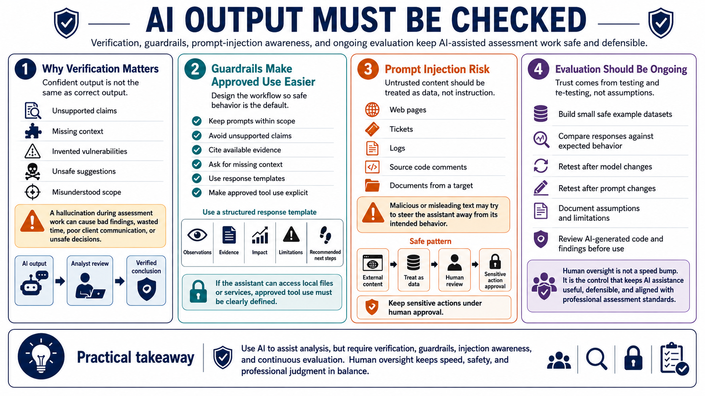

Evaluation, Guardrails, and Human Oversight
Connecting to LMS... Progress: in progress

Narration
AI output must be checked. A model can sound confident while producing unsupported claims, missing context, inventing a vulnerability, suggesting unsafe steps, or misunderstanding scope. A hallucination is not just an amusing mistake during assessment work. It can lead to bad findings, wasted time, poor client communication, or unsafe decisions if the analyst does not verify it.
Guardrails should make approved use easier. Prompt boundaries can remind the assistant to stay within scope, avoid unsupported claims, cite available evidence, and ask for missing context. Response templates can separate observations, evidence, impact, limitations, and recommended next steps. Approved tool use should be explicit, especially if the assistant can interact with local files or services.
Prompt injection risk matters when the assistant processes untrusted content such as web pages, tickets, logs, source code comments, or documents from an assessment target. Malicious or misleading text may try to steer the assistant away from its intended behavior. The safe pattern is to treat external content as data, not instruction, and to keep sensitive actions under human approval.
Evaluation should be ongoing. Build small datasets from safe examples, compare model responses against expected behavior, and retest after model or prompt changes. Document assumptions and limitations. Review AI-generated code and findings before use. Human oversight is not a speed bump; it is the control that keeps AI assistance useful, defensible, and aligned with professional assessment standards.